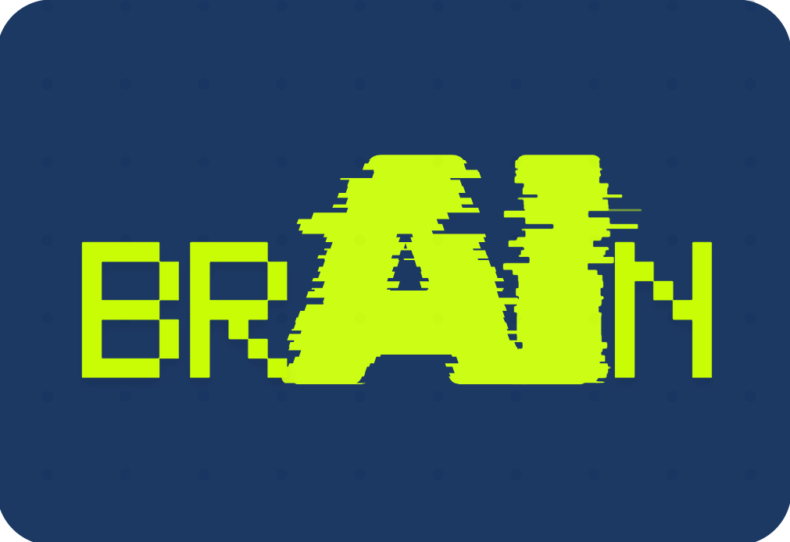

<div class="main-card">
    <div class="main-title">AI Brain Scan Assistant</div>
    <div class="sub-title">
        Sistem analisis citra MRI berbasis Deep Learning untuk deteksi dini dan klasifikasi perkiraan jenis tumor otak secara otomatis.
    </div>
</div>

<div class="main-container">
        
    </div>
    <div class="sidebar-box">
        <b>Alur Diagnosa:</b>
        <ol style="margin-top: 5px; padding-left: 20px;">
            <li>Upload foto MRI.</li>
        <li>Klik tombol Analisis.</li>
        <li>Lihat prediksi & probabilitas.</li>
    </ol>
</div>